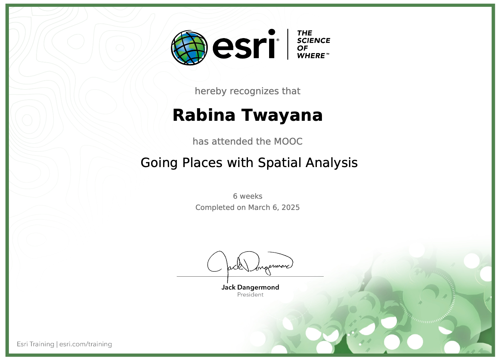

MOOC: Going Places with Spatial Analysis
Course Objectives
- Understand why location really matters in a wide range of business and policy decisions.
- Understand some of the distinguishing characteristics that make spatial data special.
- Learn how to identify and describe uses of several spatial analysis techniques.
- Gain hands-on experience with authentic spatial analysis workflows in a cloud-based mapping environment.
Course Content
Section 1 (Geography Matters):
This lesson introduces spatial analysis and all the different ways that location affects our lives. It identifies the tools and data used to explore spatial questions and problems.
Section 2 (Understanding and Comparing Places):
Different locations host different physical and cultural features and populations. Locations can be described and summarized with attributes and can be compared to one another.
Section 3 (Determining How Places are Related):
How you arrange your data affects how you understand locations. Choosing the appropriate scale and combining meaningful data sets can help reveal relationships.
Section 4 (Finding the Best Locations and Paths):
Topology defines spatial relationships between features. Querying these relationships along with specific attributes helps find optimal locations for activities, structures and routes.
Section 5 (Detecting and Quantifying Patterns):
Information on the distribution patterns of a phenomenon can guide policies that encourage positive activities and deter negative ones.
Section 6 (Making Predictions):
Models help predict the situation in locations where data is not available and help analysts understand the underlying causes of patterns.
Each session consists of atleast one practical exercise and following are the some screenshots of analysis made on practical sessions

Going places with spatial analysis (06 March, 2025). MOOC Certificate . Obtained from Esri Academy
One of the key takeaways was learning how to use ModelBuilder to streamline and automate spatial analysis workflows. Additionally, hotspot analysis to identify areas with missing trash collection, proximity analysis for finding the nearest monitoring sites, spatial interpolation techniques to fill data gaps and performing complex spatial queries/filters to extract meaningful insights from large datasets are few essential skills I gained that enhance spatial decision-making and problem-solving in GIS applications. Overall, this MOOC provided valuable exposure to web-based GIS tools, broadening my ability to conduct spatial analysis more efficiently.